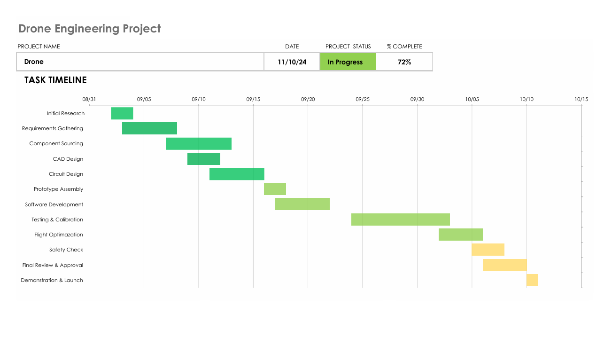
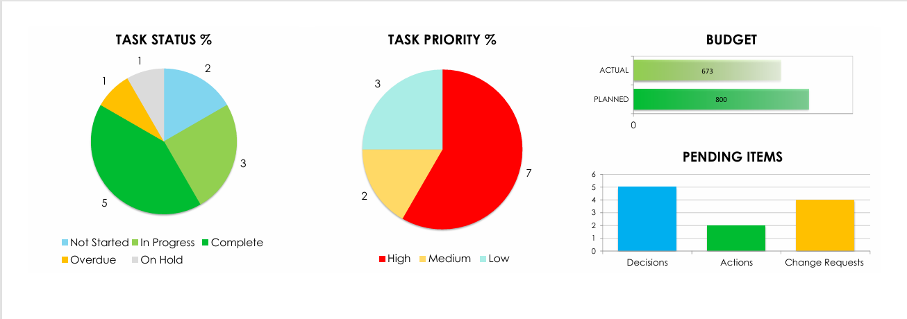
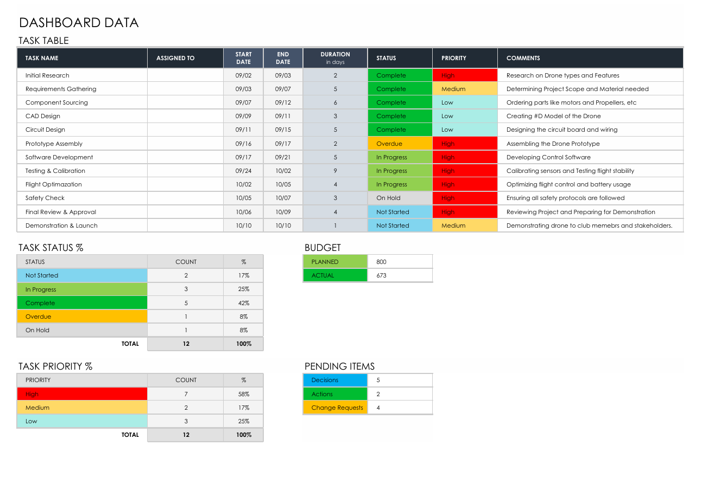

Overview
The Data Dashboard for KPI Analysis is an Excel-based solution designed to provide clear, concise, and visual insights into project performance and key metrics. It leverages Excel’s data visualization tools to track and display project timelines, budget utilization, task progress, and other key performance indicators (KPIs).
Objectives
- Create an easy-to-use Excel dashboard for visualizing KPIs.
- Track project progress, budget, and task completion effectively.
- Provide stakeholders with a quick, visual summary of performance metrics.
Features
- Interactive Excel Dashboard: A single Excel file containing various KPI charts.
- Gantt Chart: Tracks project phases and timelines visually.
- Budget Chart: Compares planned and actual expenditures using bar/line charts.
- Task Completion Pie Chart: Visual representation of completed, ongoing, and pending tasks.
- Summary Table: Key performance metrics summarized for quick insights.
Tools Used
- Microsoft Excel: The primary tool used for data analysis and visualization.
- Excel Functions: SUM, IF, VLOOKUP, and INDEX-MATCH functions for data manipulation.
- Charts: Gantt chart, bar chart, line chart, and pie chart for visualization.
Visualizations
The dashboard includes the following visualizations:
- Gantt Chart: Displays the project schedule, including start and end dates for each phase.
- Budget Analysis Chart: Shows budgeted vs. actual spending over time.
- Task Completion Pie Chart: Illustrates the percentage of tasks completed, in progress, or not started.



Usage
- Open the Excel File: Double-click the
KPI_Dashboard.xlsxfile to open it in Excel. - Data Entry: Update the raw data tables with your current project information:
- Timeline Data: Add project tasks, start dates, and end dates for the Gantt chart.
- Budget Data: Enter planned and actual expenses in the budget sheet.
- Task Data: Update task statuses (Completed, In Progress, On Hold) in the task sheet.
- View the Dashboard: Navigate to the Dashboard tab to see the updated visualizations.
Future Improvements
- Automated Data Update: Implement Excel macros to refresh charts automatically.
- Enhanced Filters: Add slicers or filters for better data exploration.
- More KPI Metrics: Expand the dashboard to include additional KPIs like ROI, efficiency rates, and forecast accuracy.